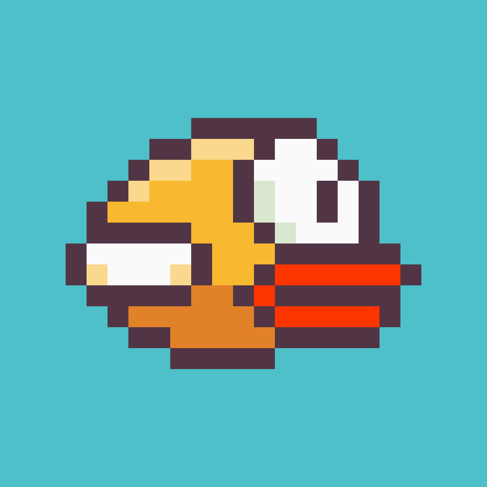

Crappy Bird
Toca para volar. No toques las tuberías.
Descargar APKVersión 0.9.1 · Android · 41 MB
Cómo instalarlo
- Toca Descargar APK desde el móvil.
- Abre el archivo descargado.
- Si Android lo pide, permite instalar apps de origen desconocido para tu navegador.
- Pulsa Instalar y a jugar.
Para actualizar, descarga la nueva versión e instálala encima: no pierdes tu récord.